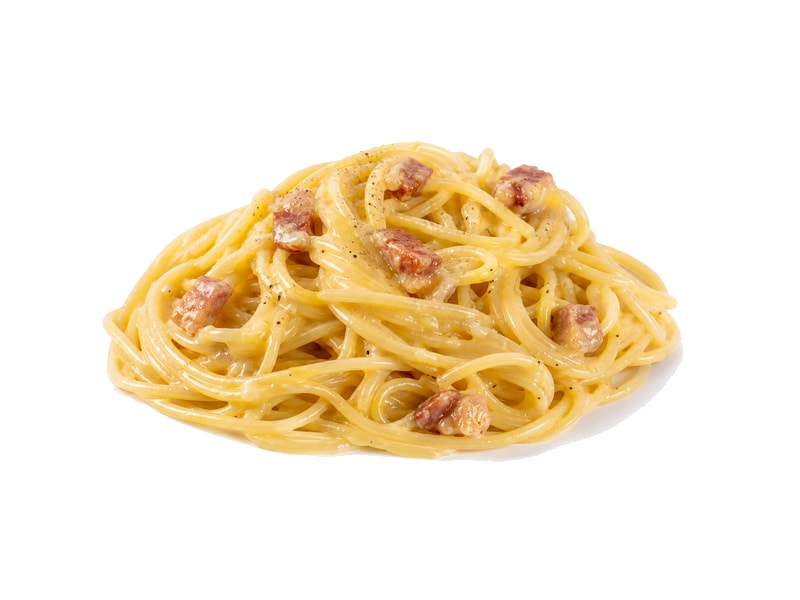

Dania z makaronu
Spaghetti Carbonara
Spaghetti Carbonara: 9 g białka, 220 kcal, 19 g węglowodanów i 12 g tłuszczu na 100 g. Kategoria: Dania z makaronu.
Kalorie220 kcalna 100 g
Białko / proteiny9 g
Węglowodany19 g
Tłuszcz12 g
Cena (szac.)~3,71 złza 100 g
Ceny zaktualizowano: maj 2026 (szacunek — ceny w popularnych supermarketach)
Porcja: porcja (350g)
| Kalorie | 770 kcal |
|---|---|
| Białko | 31.5 g |
| Węglowodany | 66.5 g |
| Tłuszcz | 42 g |
| Cena (szac.) | ~12,99 zł |
Szczegółowe składniki odżywcze na 100 g
| Wartość energetyczna (kalorie) | 220 kcal |
|---|---|
| Białko (proteiny) | 9 g |
| Węglowodany | 19 g |
| Tłuszcz | 12 g |
| Tłuszcze nasycone | 5 g |
| Tłuszcze nienasycone | 7 g |
| Witaminy i minerały | Wapń, Tiamina (B1), Żelazo |
| Współczynnik kcal / 1 g białka | 24.4 |
| Cena produktu (szac. za 100 g) | ~3,71 zł |
| Cena za 100 g białka (szac.) | ~41,24 zł |